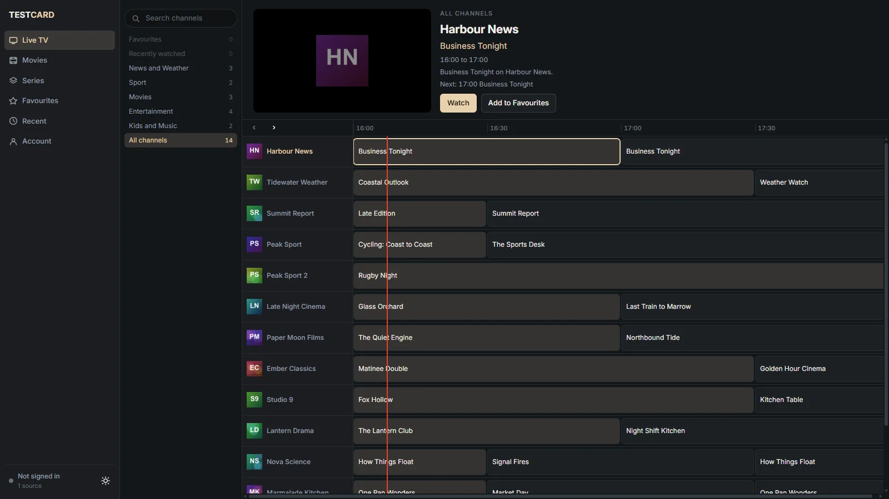

Testcard: an IPTV player for Windows and Fire TV.
Xtream Codes and M3U. A programme guide that's the page, not a pop-up. Built on mpv and SQLite so a source with tens of thousands of channels still scrolls.
| Sources | Xtream Codes, M3U, XMLTV guide. Refresh: Off / 6h / 12h / 24h. |
|---|---|
| Playback | mpv embedded, HEVC and E-AC-3. Fire TV: Media3 with automatic feed fallback (4K to HD). |
| Library | Live, Films, Series, Catch-up (where the provider keeps it), Favourites, Recents, Continue watching. |
| Account | Up to 4 profiles, encrypted sync, TV sign-in by code. |
| Updates | In-app. |
| What it doesn't do | Phones, recording, shipping channels. |

- Rail. Categories with counts; Favourites and Recently watched sit on top.
- Preview. The selected channel, its programme and what is on next.
- Guide. A grid you scroll through, with channels in rows and time across.
- Now-line. The red line is the current time. Programmes either side are past or to come.
- Favourites. One keypress on a channel adds it here.
Sources
Testcard is a player. You bring the source. It reads Xtream Codes logins and M3U playlists, and takes an XMLTV URL for the programme guide when your provider gives you one.
Adding a source
- Xtream Codes: server address, username and password from your provider.
- M3U: a playlist URL or file. Add an XMLTV URL if you want a guide.
- Refresh: Off, 6h, 12h or 24h. Large sources are stored in SQLite, so refreshing does not stall the interface.
Testcard ships no channels and does not recommend providers.
Live TV
Channels in rows, time across, one red line for now. Everything is reachable from the keyboard or a remote. Try it below.
Try the keyboard
- ↑↓channel
- ←→programme
- Enterplay
- Ffavourite
- /search
- Escclear
No signal. No channel matches that search. Press Esc to clear it.
The clock is fixed at 20:58. No video plays and nothing is requested; Enter only changes the status line.
Playback
On Windows, mpv is embedded, so HEVC and E-AC-3 play without codec packs. On Fire TV, playback uses Media3. If a feed stalls at 4K, Testcard falls back to the HD feed automatically.
What plays still depends on what your provider sends.
Library
Live, Films and Series, plus Catch-up where your provider keeps it. Favourites, Recents and Continue watching sit across all of them. Names are tidied for display; the provider's raw name is kept alongside.
Sync
Up to 4 profiles, each with its own favourites and history. Sync is encrypted. A TV signs in by code: show the code on the TV, enter it on a computer you are already signed in on.
Link TV: placeholder anchor for the code sign-in page in this prototype.
Platforms and requirements
| Platform | Requirement | Package |
|---|---|---|
| Windows | Windows 10/11 x64 to confirm | .exe installer |
| Fire TV | Fire OS version TBD (owner) | .apk, sideloaded |
| Phones | Not supported yet. | none |
Privacy
- Your library lives in a SQLite database on your device.
- Provider logins are kept in the operating system's secure store.
- If you use sync, what leaves your device is encrypted first.
- This website sets no cookies and has no analytics.
Draft wording; the full privacy page is to be written from the owner's confirmed facts.
Download
Placeholder v0.0.0 · date · size TBD · SHA-256 TBD
Windows
Download for Windows (.exe)v0.0.0 · date · size TBD · SHA-256 TBD
The installer is unsigned, so Windows will warn. Compare the SHA-256 before running it.
Fire TV
Fire TV (.apk)v0.0.0 · date · size TBD · SHA-256 TBD
Install with Downloader. Downloader code: TBD (owner).
Changelog placeholder
v0.0.0 · date: not a real release. Changes will be listed here once there is one.
FAQ
Does Testcard come with channels?
No. Testcard is a player only; you add a source you are entitled to use. It ships no channels and does not recommend providers.
Is using an IPTV player legal?
A player is ordinary software. What matters is whether you are entitled to the content of the source you add. This is not legal advice; check the rules where you live.
Which source types work?
Xtream Codes logins and M3U playlists, with an optional XMLTV URL for the guide.
Why is my guide empty or wrong?
Usually one of: no XMLTV URL was added; the playlist's tvg-id does not match the channel id in the guide; the guide's time offset is off; or it has not refreshed yet. Check those in that order, then refresh the source.
Why does Windows warn about the installer?
The installer is not code-signed yet, so SmartScreen flags it. Compare its SHA-256 with the one on this page before you run it.
How do I install on Fire TV?
Install the Downloader app, allow it to install from unknown sources in the Fire TV settings, then enter the Downloader code (TBD, owner) to fetch the .apk.
Does it work on phones?
Not yet.
What gets synced and is it encrypted?
Profiles, favourites and watch progress, encrypted before they leave your device. exact list TBD (owner)
Can I use several profiles?
Yes, up to 4.
Does it record?
No.